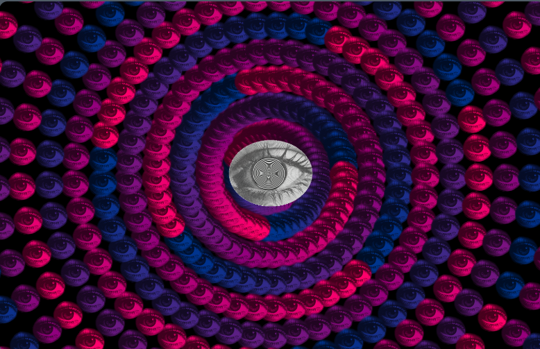
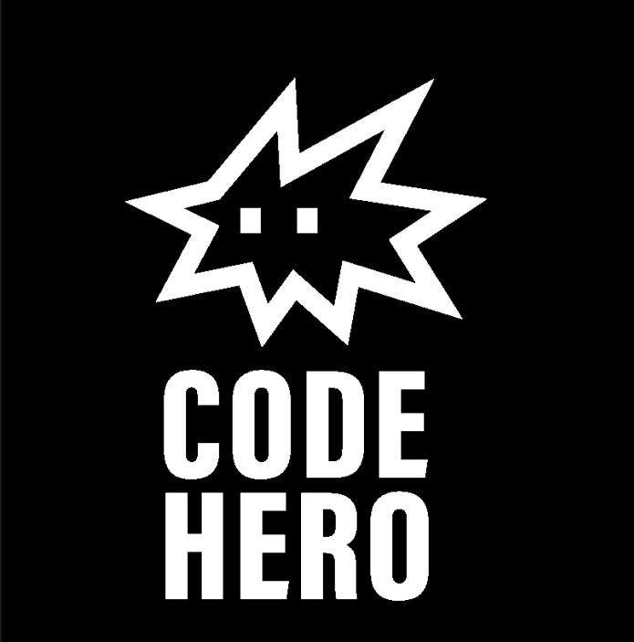
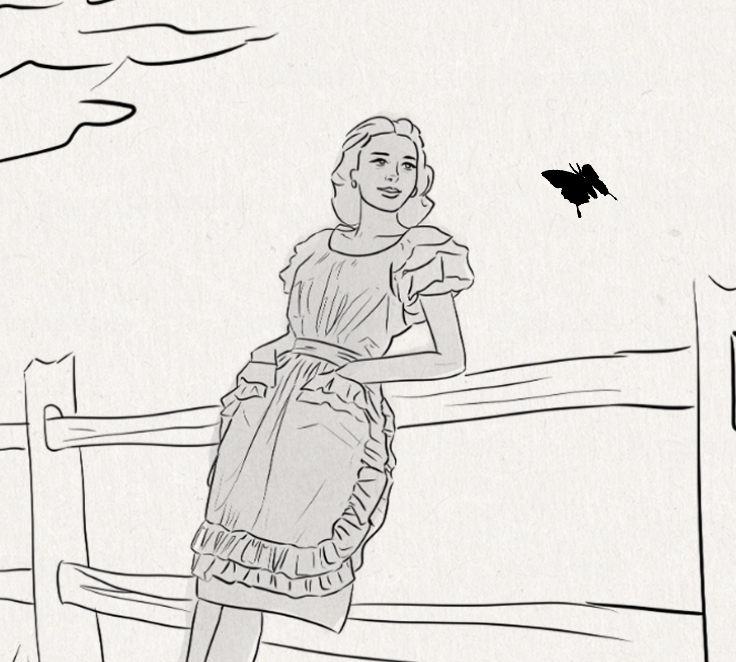
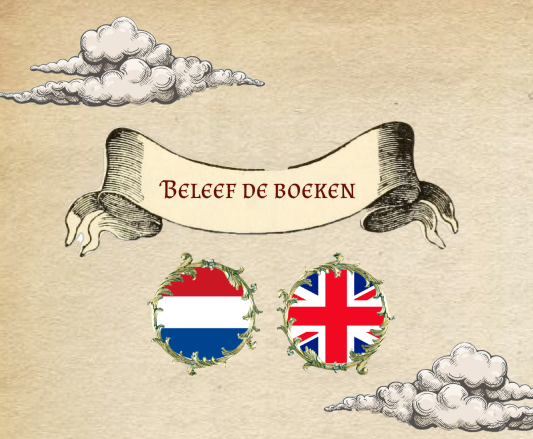
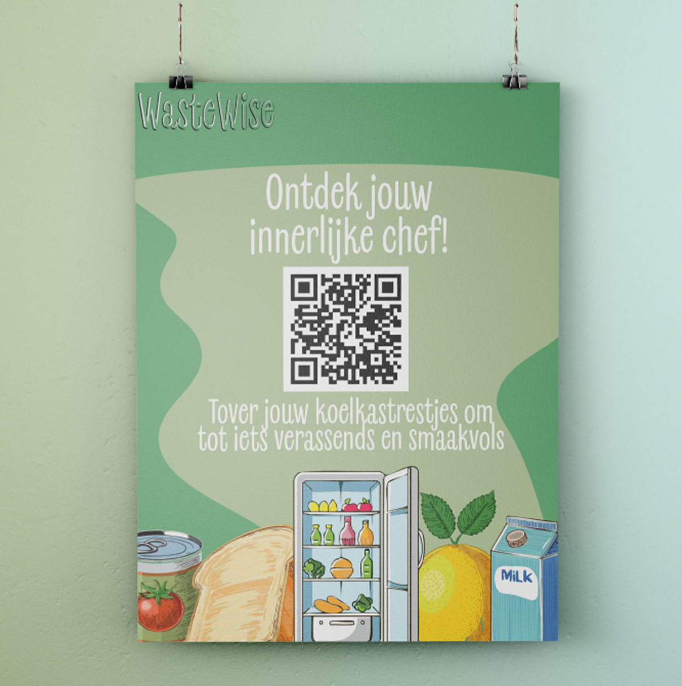
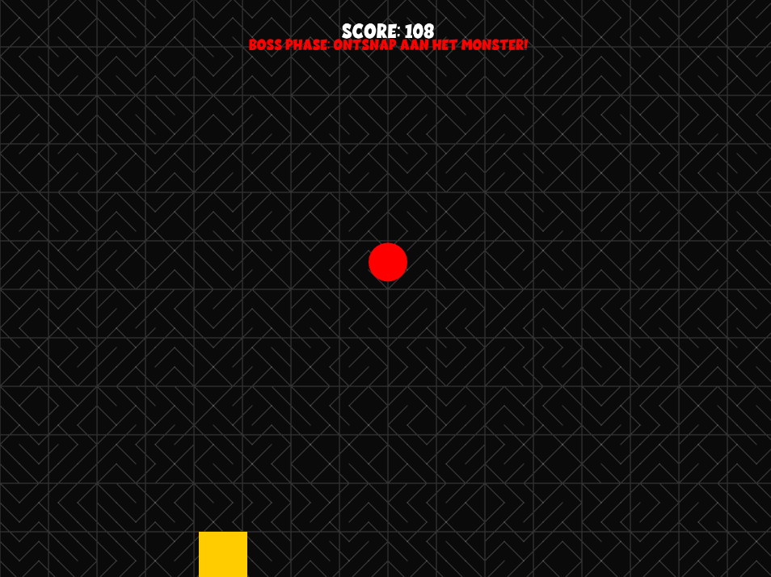
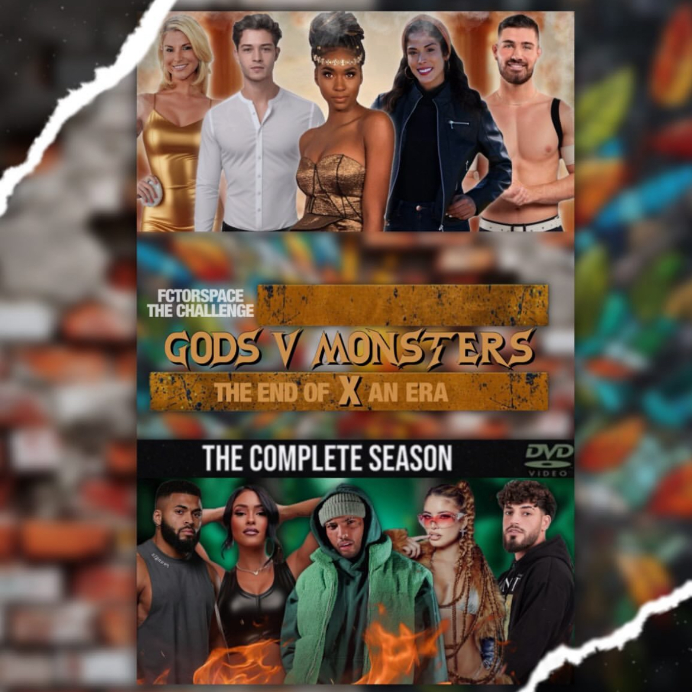

Projecten tot dusver
Projecten waarmee ik indruk maak, en oplossingen die gebruikers helpen groeien of ze uitdagen.
Merkbeeld

Generative Art

Coding Workshops

Multimedia Story

Beleef de Boeken

Campagne

Games

Eigen projecten
